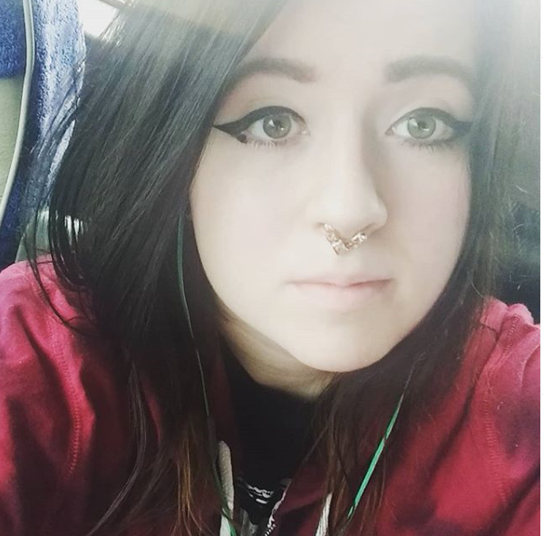
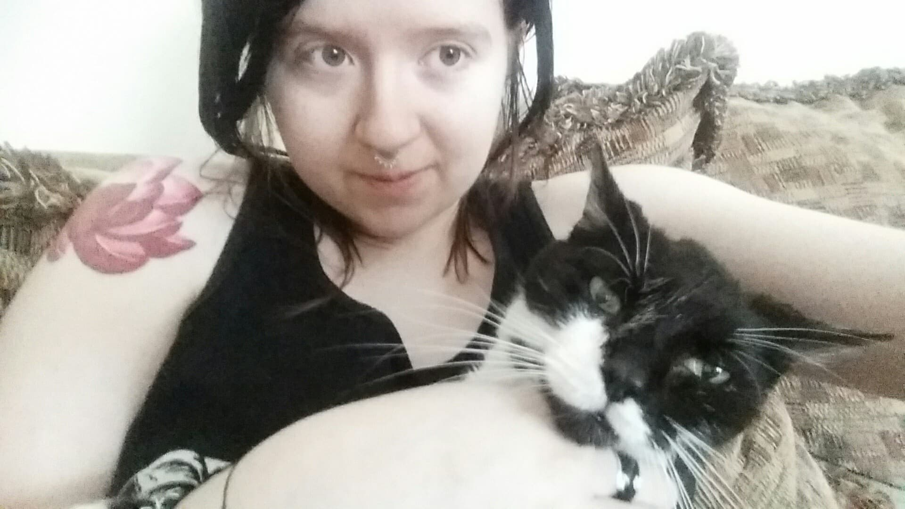

About Me


I'm a young artist who enjoys drawing with graphite. I've been drawing for many years, ever since I can remember. It's always been an important part of my life and how I express myself is primarily visual. I love music, documentaries, and tattoos (working on my 8th at the moment!). I love my cat, Rocky, in the second photo. He was a big part of my life and animals are my favorite beings in the world. I've always wanted to live in a big city and that's what I've been striving for.
I majored in Business Administration at Virginia Western Community College, then went on to major in Drawing at George Mason University. I’ve worked with Alex Morelli Music for a little over a year and currently we are building a digital marketing agency. I am also the Sales and Marketing Assistant at GreenHealth in Lorton, VA.
I love what I do for my day job, and with my time ending at George Mason, I have not had much time to create lately. I enjoy drawing (pen on paper type of person), printmaking, and graphic design. I do a little bit of everything.
My creative approach—no matter the medium—is to find points of tension behind the idea I’ve been assigned or am interested in. I do several iterations on each point and usually end up refining the one I find most controversial.
For me, controversy isn’t about instigation, but rather, a way to arrest your audience. It’s a way to plant a little bit of desire in their hearts; a yearning to turn the page and learn more about your idea. Ultimately, it’s about creating memorable images.